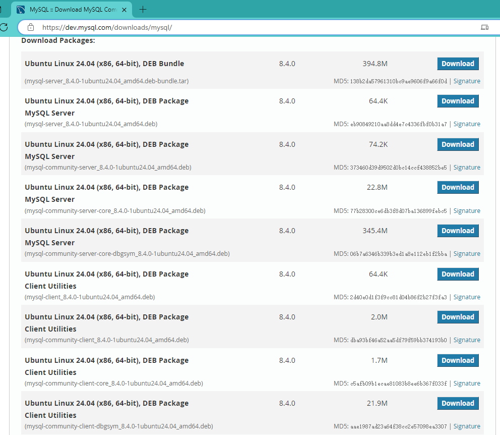
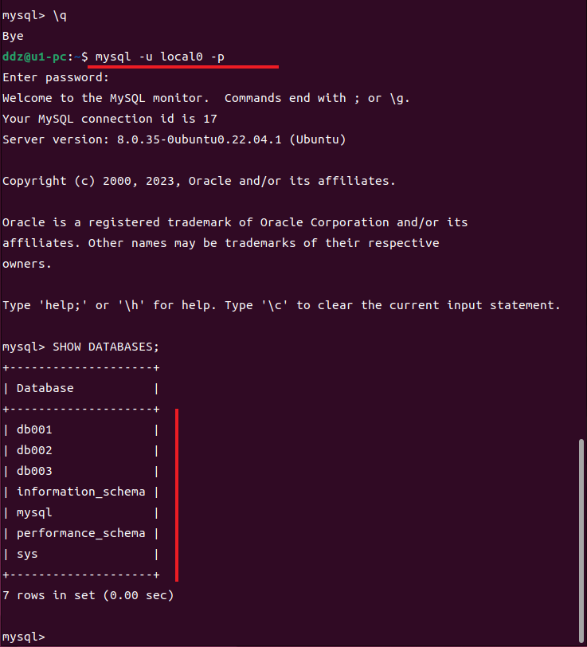

MySQL
整理记录 MySQL 相关的知识点，赶紧看看吧！
图形客户端
- MySQL :: Download MySQL Workbench
- DBeaver Community | Free Universal Database Tool
- HeidiSQL - MariaDB, MySQL, MSSQL, PostgreSQL and SQLite made easy
- Navicat 中国 | 支持 MySQL、Redis、MariaDB、MongoDB、SQL Server、SQLite、Oracle 和 PostgreSQL 的数据库管理
Windows 安装
好想吐槽一下啊！比重装系统还麻烦……
Ubuntu 22.04 安装
卸载
安装之前，先弄一下卸载
# 停止MySQL服务
sudo systemctl stop mysql
# 卸载MySQL软件包（开始用的是这个）
sudo apt remove --purge mysql-server mysql-client mysql-common mysql-client-core-8.0 mysql-server-core-8.0
# 通配符匹配卸载（后来发现这个更好用）
sudo apt purge mysql-*
# 清理残留的配置文
sudo rm -rf /etc/mysql
sudo rm -rf /var/lib/mysql
sudo rm -rf /var/lib/mysql-files
sudo rm -rf /var/lib/mysql-keyring
sudo rm -rf /var/log/mysql
sudo apt autoremove
sudo apt autoclean
# 重新加载系统服务
sudo systemctl daemon-reload
# 更新本地包数据库
sudo apt update
# 检查是否卸载干净
dpkg -l | grep mysql
安装
官网下载地址：MySQL :: Download MySQL Community Server 本来是想着到官网弄个软件包已安装就完事儿了，结果这一拉流，直接懵逼了……也没有查每一个都是干什么的，一个个安装吧，又太多了，算了，还是老老实实用

安装并检查版本
说明 这里安装的版本是：
# 1、安装
sudo apt update
sudo apt install mysql-server
# 2、查看服务状态
sudo systemctl status mysql
# 备用
sudo systemctl start mysql
sudo systemctl stop mysql
sudo systemctl restart mysql
sudo systemctl enable mysql
# 3、版本检测
mysql --version
安全配置 MySQL
运行
sudo mysql_secure_installation
MySQL Shell
# 进入 MySQL Shell
sudo mysql
# 列出所有的用户
select user, host, plugin from mysql.user;
# 列出所有的数据库
SHOW DATABASES;
切换root用户进入方式
你可以使用
# 默认的 sudo mysql 进入修改为 mysql -u root -p 进入
# \q 退出 shell
alter user 'root'@'localhost' identified with mysql_native_password by 'xxx';
flush privileges;
\q
# mysql -u root -p 进入修改为 sudo mysql 进入
alter user 'root'@'localhost' identified with auth_socket;
flush privileges;
\q
新建数据库
# 列出所有的数据库
SHOW DATABASES;
CREATE DATABASE db001;
CREATE DATABASE db002;
CREATE DATABASE db003;
创建用户并分配数据库
# 创建本地账户并给与所有库的权限
CREATE USER 'local0'@'localhost' IDENTIFIED BY 'local0';
GRANT ALL PRIVILEGES ON *.* TO 'local0'@'localhost';
# 撤销用户权限并删除用户
REVOKE ALL PRIVILEGES ON *.* FROM 'local0'@'localhost';
DROP USER 'local0'@'localhost';
# 创建本地账户并给与指定数据库的权限
CREATE USER 'local8'@'localhost' IDENTIFIED BY 'local8';
GRANT ALL PRIVILEGES ON db001.* TO 'local8'@'localhost';
# 撤销用户权限并删除用户
REVOKE ALL PRIVILEGES ON db001.* FROM 'local8'@'localhost';
DROP USER 'local8'@'localhost';
FLUSH PRIVILEGES;
\q
新建用户并分配数据库之后测试一下
mysql -u local0 -p
SHOW DATABASES;
mysql -u local8 -p
SHOW DATABASES;


下面在看一下撤销用户权限并删除用户的截图
远程连接
# 修改文件权限
sudo chmod 777 /etc/mysql/mysql.conf.d/mysqld.cnf
# mysqld.cnf 文件中你可以搜索 bind-address；如果没有，添加
bind-address = 0.0.0.0
# 对所有用户移除写权限
sudo chmod a-w /etc/mysql/mysql.conf.d/mysqld.cnf
# 重启服务
sudo systemctl restart mysql
创建远程账户并分配数据库
# '%' 表示允许来自任何IP地址的连接
CREATE USER 'admin'@'%' IDENTIFIED WITH mysql_native_password BY 'xxx';
GRANT ALL PRIVILEGES ON *.* TO 'admin'@'%';
FLUSH PRIVILEGES;
# 如果不想要了，干掉他
REVOKE ALL PRIVILEGES ON *.* FROM 'admin'@'%';
DROP USER 'admin'@'%';
FLUSH PRIVILEGES;

新增
批量插入数据
同事想让帮忙写个语句，可以批量插入数据，于是便网上查了一下并结合需求，写了下面的语句：
-- https://www.sjkjc.com/mysql/install-on-windows/
-- https://zhuanlan.zhihu.com/p/37152572
-- https://www.runoob.com/w3cnote/windows10-mysql-installer.html
-- https://segmentfault.com/a/1190000040901998
-- https://www.runoob.com/mysql/mysql-functions.html
-- http://www.htsjk.com/Mysql/14778.html
-- https://www.jb51.net/article/163001.htm
-- https://www.cnblogs.com/developer_chan/p/9229845.html
-- 1、创建存储过程
delimiter $$
drop procedure if exists ddz_batchinsert_data;
create procedure ddz_batchinsert_data(in max_num int(10))
begin
declare i int default 0;
set autocommit=0;
repeat
set i=i+1;
insert into test001.table001(id,flag,code,name,createdate) values(i,uuid(),CONCAT('code',i),CONCAT('name',i),CURRENT_TIMESTAMP());
until i=max_num
end repeat;
commit;
end $$
-- 2、调用存储过程
CALL `test001`.`ddz_batchinsert_data`(500000);